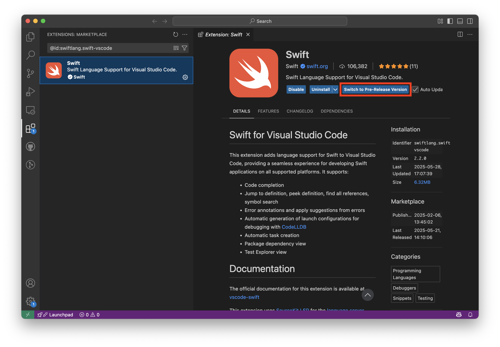

Article
Installing Pre-Release Builds
Try out the latest updates by switching to the pre-release version.
Overview
The Swift extension provides pre-release builds that you can use to test out unreleased features or get bug fixes before the project publishes an official release. Pre-release build numbers are one minor version ahead of the most recent release.
The “Switch to Pre-Release Version” button in the VS Code extensions view is used to install the latest pre-release builds:

When you select to use a pre-release version, the button changes to “Switch to Release Version”, which lets you go back to the official release.
See Also
Advanced
Visual Studio Code Dev Containers
Create reusable development environments using containers.